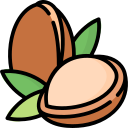
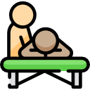
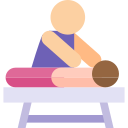

Massaggio Relax
Massaggio Relax
Massaggio Relax
Questo massaggio ripristina benessere, armonia e pace interiore. Tra i benefici principali vi è la riduzione della pressione sanguigna, degli stati d’ansia e dei livelli di stress. Il massaggio relax stimola la produzione di endorfine, migliorando dunque l’umore di chi lo riceve. Una vera coccola per il corpo.
Durata : 55 Minuti
Prezzo : 40 €
 Massaggio Argan
ARGAN - RILASSANTE
L’oro liquido che viene dal Marocco è prodigioso: ne basta qualche goccia per idratare la pelle e donare una sensazione di rilassamento profondo a tutto il corpo. Grazie all’azione congiunta del massaggio e delle proprietà dell’argan si avrà così un vero trattamento di bellezza e al contempo di avvolgente relax. L’olio puro di argan porta innumerevoli benedici, grazie alle sue numerose vitamine A, E, F ed Omega 6, lasciando la pelle morbida e vellutata.
Durata : 55 Minuti
Prezzo : 50 €
Caldo Abbraccio
KARITE - NUTRIENTE
Massaggio di rilassamento profondo eseguito con caldo burro di karitè aromatico, colato e lavorato sul corpo con una manualità delicata e avvolgente. Il risultato sarà una pelle nutrita in profondità e una globale sensazione di benessere. Il burro di Karitè ha proprietà emollienti, nutrienti, idratanti ed antiossidanti, un vero toccasana per la pelle.
Durata : 55 Minuti
Prezzo : 60 €
 Massaggio Svedese
Massaggio Svedese
DECONTRATTURANTE PERSONALIZZATO
Trattamento a base di olio decontratturante profondo che prevede tutto il corpo, ma avendo manovre libere tra loro può concentrarsi su parti specifiche (secondo le esigenze del ricevente). Il massaggio Svedese è il massaggio occidentale più utilizzato, le cui tecniche riprese dai massaggi orientali, con tecniche messe a punto sin dall'inizio del '600.
Durata : 50 Minuti
Prezzo : 50 €
 Decontratturante
INTENSO LOCALIZZATO
Il massaggio decontratturante è un massaggio che scioglie le tensioni e le contratture, viene considerato un vero e proprio trattamento di benessere per i soggetti con dolore muscolare localizzato in distretti specifici a seguito di posture scorrette, sforzi fisici inadeguati, cause organiche, emotive, da disordine alimentare o da stanchezza.
Durata : 45 Minuti
Prezzo : 30 €